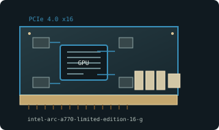

[ MODERN PCI EXPRESS GRAPHICS // IDENTIFIED COMPONENT ]
Intel Arc A770 Limited Edition 16 GB
Alchemist / Xe-HPG, 2022. This entry identifies one specific product configuration; closely named models and partner-board variants are distinguished below.

MODEL IDENTIFICATION: 8 GB and 16 GB editions are separate; identify Limited Edition versus partner model. Resizable BAR strongly recommended; older UEFI platforms need compatibility checks.
Recorded specifications
| Cataloged product | Intel Arc A770 Limited Edition 16 GB |
|---|---|
| Generation / chip | Alchemist / Xe-HPG, 2022 |
| Core & memory | ACM-G10; 32 Xe-cores / 4096 FP32 ALUs; 16 GB GDDR6; 256-bit bus; 225 W total board power. |
| Host interface & I/O | PCI Express 4.0 x16; one 8-pin and one 6-pin input on Limited Edition; three DisplayPort 2.0 and one HDMI 2.1. |
| Variant boundary | 8 GB and 16 GB editions are separate; identify Limited Edition versus partner model. Resizable BAR strongly recommended; older UEFI platforms need compatibility checks. |
| Archive record | Photograph label and PCB revision; record BIOS, driver version, adapters, physical condition, and source-document revision used to verify specimen. |
Compatibility & service notes
16 GB Limited Edition reference card, not A750 or 8 GB A770. Partner limits and I/O can differ.
Confirm UEFI/ReBAR and PSU leads. Inspect cooler and sockets; save firmware and Intel driver version with archival record.
- Check slot signaling, keying, lane width, auxiliary power, clearance, and PSU requirements; physical insertion alone does not prove compatibility.
- Use drivers supporting this device ID and OS release. Preserve original driver/firmware before updates and record source.
- Do not energize cards with cracks, corrosion, damaged power sockets, obstructed fans, or suspected shorts; inspect before bench testing.
Manufacturer & standards sources
- Intel Arc A770 Limited Edition specificationsUse alongside the exact board label and revision; archived family data may not describe every OEM implementation.
- PCI-SIG PCI Express standardsUse alongside the exact board label and revision; archived family data may not describe every OEM implementation.
- Intel Arc A770 16 GB specificationsUse alongside the exact board label and revision; archived family data may not describe every OEM implementation.
Specifications describe the cataloged reference configuration only. Manufacturer manuals and physical product label take precedence for a specific OEM revision.